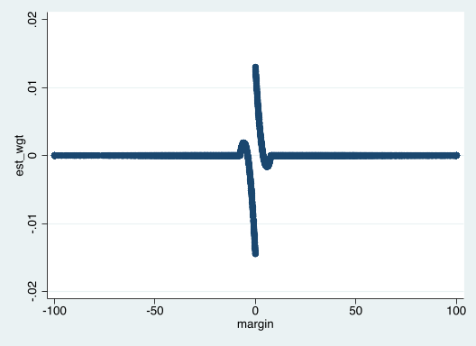

30 Aug 2022
The RDHonest-vStata package implements estimates and
confidence intervals (CIs) from Armstrong and Kolesár (2018) and Armstrong and
Kolesár (2020) for regression discontinuity (RD) in Stata. This
vignette describes some of the functionality.
To begin, we’ll illustrate using elections data from Lee (2008).
. clear all . macro drop _all . webuse set "https://raw.githubusercontent.com/tbarmstr/RDHonest-vStata/master/data" (prefix now "https://raw.githubusercontent.com/tbarmstr/RDHonest-vStata/master/data") . webuse lee08 (Lee, D. S. (2008))
The running variable margin is margin of victory of the
Democratic candidate in the previous election in percentage points. The
outcome variable voteshare is the Democratic candidate’s
share of the vote in the next election, in percentage points. The cutoff
is 0.
The rdhonest command implements honest CIs based on
local linear estimates. For illustration, let’s start with the uniform
kernel.
. * uniform kernel, defaults for other options:
. * Armstrong and Kolesár (2020) rule of thumb for M + MSE optimal bandwidth
. rdhonest voteshare margin, kernel("uni")
Using Armstrong and Kolesar (2020) rule of thumb for smoothness constant M
Honest inference: SHARP Regression Discontinuity
──────────────────────────────────────────────────────────────────────────────
Estimate Maximum Bias Std. Error [ 95% Conf. intervals ]
──────────────────────────────────────────────────────────────────────────────
4.79816988 .891210516 1.57140644 1.2829887 8.31335106
──────────────────────────────────────────────────────────────────────────────
95% One-sided Conf. intervals: (1.32222577 , Inf), (-Inf, 8.27411398)
Bandwidth (optimized): 6.01199567
Number of effective observations: 728
Parameters:
Cutoff: 0
Kernel: uniform
Optimization criterion: MSE
Standard error estimation method: NN
Maximum leverage for estimated parameter: .006421319
Smoothness constant M (rule of thumb): .142810807
──────────────────────────────────────────────────────────────────────────────
Dependent variable: voteshare
Running variable: margin
When we use the uniform kernel, the point estimate is simply obtained
by running a linear regression using a “discontinuity sample” of
observations within a certain distance of the cutoff (note that the
cutoff is 0 in this example, which is the default for the
rdhonest command; we can specify a different cutoff using
the option c()). The distance that determines the
discontinuity sample is called the bandwidth. It is given in the output
above, and can be obtained using the postestimation
e(bandwidth):
. display e(bandwidth) 6.0119957
So, in this case, we are running a linear regression using observations where the running variable is within 6.0119957 units of the cutoff point 0. We can check that the point estimates match using Stata’s built-in commands:
. scalar bw = e(bandwidth)
. gen treat = (margin>0)
. gen treatxmargin = treat*margin
. reg voteshare treat margin treatxmargin if abs(margin)<=bw, robust
Linear regression Number of obs = 728
F(3, 724) = 53.20
Prob > F = 0.0000
R-squared = 0.1832
Root MSE = 11.495
─────────────┬────────────────────────────────────────────────────────────────
│ Robust
voteshare │ Coef. Std. Err. t P>|t| [95% Conf. Interval]
─────────────┼────────────────────────────────────────────────────────────────
treat │ 4.79817 1.614018 2.97 0.003 1.629456 7.966884
margin │ .9246502 .3048005 3.03 0.003 .3262519 1.523049
treatxmargin │ -.0081335 .4760755 -0.02 0.986 -.9427869 .9265199
_cons │ 46.99352 1.061989 44.25 0.000 44.90857 49.07847
─────────────┴────────────────────────────────────────────────────────────────
Note that, while the point estimates match, the standard errors are
slightly different. This is due to the rdhonest command
defaulting to a nearest-neighbor (NN) standard error, rather than the
usual EHW standard error. The NN standard error can be less conservative
in certain settings, but here the two methods yield similar results.
A more striking difference is the 95% CI computed by the built-in
regression command, which is slightly shorter than the one reported by
rdhonest. The rdhonest command computes a
bias-aware CI that explicitly takes into account the largest
possible bias in a smoothness class determined by a
smoothness constant \(M\). In
particular, rather than assuming the specification in the above
regression holds exactly, we assume that it holds only up to
approximation error:
\[ \text{voteshare}_i = \tau \cdot \text{treat}_i + \beta_1 + \beta_2 \text{margin}_i + \beta_3 \text{treat}_i\cdot \text{margin}_i + \text{rem}(\text{margin}_i) + u_i \]
where \(\text{treat}_i=I(\text{margin}_i>0)\)
and \(\text{rem}(\text{margin}_i)\) is
the remainder term from a first order Taylor approximation of the
conditional expectation function of voteshare given margin by the linear
specification on either side of the cutoff point. We assume that this
remainder term comes from a Taylor approximation where this conditional
expectation function is twice differentiable, with second derivative
bounded by \(M\). The
rdhonest command allows \(M\) to be specified throught the
m() option. If this option is not specified (as in the
example above), it uses a rule-of-thumb from Armstrong and Kolesár (2020)
that calibrates \(M\) based on a global
fourth order polynomial on either side of the cutoff. The maximum bias
and smoothness constant are displayed in the output for
rdhonest. It can be obtained in postestimation with
e(bias) and e(M).
The two-sided CI reported by rdhonest uses the critical
value \(\text{cv}_{\alpha}(t)\),
computed as the \(1-\alpha\) quantile
of the \(|N(0,t)|\) distribution, with
\(t=\frac{\text{max.
bias}}{\text{se}}\):
\[ \text{estimate} \pm \text{cv}_{\alpha}\left(\frac{\text{max. bias}}{\text{se}}\right)\cdot \text{se} \]
By taking into account the maximum possible bias, this critical value
ensures that the coverage of the CI is at least \(1-\alpha\). The level \(\alpha\) is set using the option
alpha() and defaults to \(.05\). We refer to this as a
fixed-length CI, since it depends only on the standard error
and the smoothness constant \(M\). Note
that one could also add and subtract \(\text{max. bias} + z_{1-\alpha/2}\cdot
\text{se}\) to form the CI. Indeed, the one-sided CIs reported by
rdhonest take this form: the lower endpoint of the lower
one-sided CI is \[
\text{estimate} - \text{max. bias} - z_{1-\alpha}\cdot \text{se}
\] where \(z_{1-\alpha}\) is the
\(1-\alpha\) quantile of the \(N(0,1)\) distribution. However, in the
two-sided case, the above construction is less conservative.
The identifying assumption in sharp RD is that the latent conditional
expectation functions for treated and untreated outcomes are smooth. The
smoothness class described above formalizes this in a way that allows
for valid inference and guarantees on estimation error. The CIs reported
by rdhonest are honest in the sense that coverage
is close to the nominal level or better for all functions in this class
once the sample size is large enough. In addition, since these CIs use
finite-sample bounds on bias, the only thing needed for good
finite-sample coverage is accuracy of the normal approximation. In
particular, they are valid with discrete covariates.
Some users may be more familiar with
“pointwise-in-the-underlying-distribution” formulations of smoothness.
These are used, for example, in the optimal bandwidth calculations of
Imbens and Kalyanaraman
(2012). For many practical purposes, the two formulations lead to
similar conclusions and interpretations. For example, the mean squared
error optimal bandwidth (computed by rdhonest and discussed
below) turns out to have the same asymptotic formula as the one used by
Imbens and Kalyanaraman
(2012), with \(M\) in our
setting taking the place of the second derivative (or difference in
second derivatives) in Imbens and Kalyanaraman (2012). Indeed,
one can loosely think of the honest CI formulation used by
rdhonest as a “decision theoretically kosher” version of
pointwise-in-the-underlying distribution smoothness formulations. Key
practical differences are:
The honest CI formulation used by rdhonest can be
used in finite samples, thereby allowing for discrete
covariates.
The honest CI formulation treats \(M\) as a bound on the second
derivative, rather than an exact value of the second derivative. This
precludes higher order bias correction or estimation of \(M\) without further assumptions (such as
the global polynomial rule-of-thumb used by rdhonest). If
one makes assumptions on higher order derivatives, this is done in the
honest CI framework by formulating a bound \(M_{\text{higher}}\) on this derivative and
optimally using this bound to form estimates and CIs.
See Section 4 of Armstrong and Kolesár (2020) for further discussion.
If the bandwidth is unspecified (as in the above example)
rdhonest computes the bandwidth that optimizes a given
criterion for the smoothness class characterized by the bound \(M\) on the second derivative of the
regression function. The criterion can be set using the option
opt_criterion(). Options are MSE for mean
squared error, FLCI for two-sided CI length and
OCI for excess length of a one-sided CI, with
MSE set as the default.
The optimization is done using an initial estimate of the conditional
variance. Because rdhonest reports a robust standard error
and a bias-aware CI based on this standard error, the variance estimate
used to optimize the CI will be different than the one used for the
reported standard error and CI.
The fact that different criteria lead to different point estimates is
potentially irksome: we may want to report a point estimate that
optimizes MSE, while using the FLCI option to
report a CI that is as small as possible. This can be easily done by
rerunning the rdhonest command with both options, but one
may be hesitant to report a CI that is not centered at the reported
point estimate. Fortunately, a result from Armstrong and Kolesár (2020)
shows that, under standard RD asymptotics, MSE and CI length lead to
very similar bandwidths, and that using the MSE optimal bandwidth to
compute a bias-aware CI is still highly efficient. Let’s see how much we
can reduce the length of our CI by choosing the bandwidth to minimize CI
length:
. * same specification as before, but choose the bandwidth to minimize CI length
. rdhonest voteshare margin, kernel("uni") opt_criterion("FLCI")
Using Armstrong and Kolesar (2020) rule of thumb for smoothness constant M
Honest inference: SHARP Regression Discontinuity
──────────────────────────────────────────────────────────────────────────────
Estimate Maximum Bias Std. Error [ 95% Conf. intervals ]
──────────────────────────────────────────────────────────────────────────────
5.14231308 .951187869 1.57124452 1.5754211 8.70920506
──────────────────────────────────────────────────────────────────────────────
95% One-sided Conf. intervals: (1.60665797 , Inf), (-Inf, 8.67796819)
Bandwidth (optimized): 6.18426502
Number of effective observations: 750
Parameters:
Cutoff: 0
Kernel: uniform
Optimization criterion: FLCI
Standard error estimation method: NN
Maximum leverage for estimated parameter: .00612847
Smoothness constant M (rule of thumb): .142810807
──────────────────────────────────────────────────────────────────────────────
Dependent variable: voteshare
Running variable: margin
The bandwidth, point estimate, and CI are all very similar to the ones based on the MSE optimal bandwidth above. In this case, the MSE optimal bandwidth actually leads to a slightly shorter CI than the CI optimal bandwidth. This is due to different variance estimates being used to compute the bandwidth and the CI, as described above.
The rdhonest package also includes an option to specify
the bandwidth directly, through the option h(). However,
this may lead to a bandwidth that is far from optimal for the smoothness
constant \(M\) specified through
m(), or through the default rule-of-thumb. Rather than
specifying the bandwidth directly, we recommend specifying the
smoothness constant \(M\) through the
m() option, and letting the rdhonest command
compute the optimal bandwidth. Since the optimal bandwidth depends
directly on \(M\), this is equivalent
to checking sensitivity of results to the bandwidth. We discuss this
below.
An exception to this practice arises if the optimal bandwidth leads
to a very small number of effective observations, which may lead to poor
finite-sample performance of the CI due to failure of the normal
approximation. One may then want to use the option h() to
specify a larger bandwidth.
As shown in Armstrong and Kolesár (2018), it is
impossible to avoid specifying the smoothness constant \(M\), either explicitly or using auxiliary
assumptions, such as the assumptions described in Armstrong and Kolesár (2020)
relating a global polynomial to local smoothness that motivate the
rule-of-thumb used by rdhonest as a default. We therefore
recommend varying \(M\) as a form of
sensitivity analysis. Since we let rdhonest compute the
optimal bandwidth for each value of \(M\), this is equivalent to reporting
specifications with different bandwidths.
Let’s try some other choices of \(M\) in our original specification. We’ll start with the default Armstrong and Kolesár (2020) rule-of-thumb, and then consider more optimistic (smaller) choices of \(M\), and more pessimistic (larger) choices of \(M\).
. qui rdhonest voteshare margin, kernel("uni")
. scalar M_rot = e(M)
. scalar est_rot = e(est)
. scalar HLCi_rot = e(HLCi)
. scalar h_rot = e(bandwidth)
.
. * some other values of M to try
. scalar M01 = .1*M_rot
. scalar M05 = .5*M_rot
. scalar M2 = 2*M_rot
. scalar M10 = 10*M_rot
.
. qui rdhonest voteshare margin, kernel("uni") m(`=M01')
. scalar est01 = e(est)
. scalar HLCi01 = e(HLCi)
. scalar h01 = e(bandwidth)
.
. qui rdhonest voteshare margin, kernel("uni") m(`=M05')
. scalar est05 = e(est)
. scalar HLCi05 = e(HLCi)
. scalar h05 = e(bandwidth)
.
. qui rdhonest voteshare margin, kernel("uni") m(`=M2')
. scalar est2 = e(est)
. scalar HLCi2 = e(HLCi)
. scalar h2 = e(bandwidth)
.
. qui rdhonest voteshare margin, kernel("uni") m(`=M10')
. scalar est10 = e(est)
. scalar HLCi10 = e(HLCi)
. scalar h10 = e(bandwidth)
.
. disp _newline "M | bw | est. | lower CI | upper CI " _newline ///
> round(M01,.0001) " | " round(h01,.0001) " | " round(est01,.0001) " | " round(est01-HLCi01,.0001) " | "
> round(est01+HLCi01,.0001) _newline ///
> round(M05,.0001) " | " round(h05,.0001) " | " round(est05,.0001) " | " round(est05-HLCi05,.0001) " | "
> round(est05+HLCi05,.0001) _newline ///
> round(M_rot,.0001) " | " round(h_rot,.0001) " | " round(est_rot,.0001) " | " round(est_rot-HLCi_rot,.0
> 001) " | " round(est_rot+HLCi_rot,.0001) _newline ///
> round(M2,.0001) " | " round(h2,.0001) " | " round(est2,.0001) " | " round(est2-HLCi2,.0001) " | " roun
> d(est2+HLCi2,.0001) _newline ///
> round(M10,.0001) " | " round(h10,.0001) " | " round(est10,.0001) " | " round(est10-HLCi10,.0001) " | "
> round(est10+HLCi10,.0001)
M | bw | est. | lower CI | upper CI
.0143 | 15.0777 | 7.7854 | 5.5526 | 10.0181
.0714 | 7.9692 | 6.0282 | 3.0281 | 9.0283
.1428 | 6.012 | 4.7982 | 1.283 | 8.3134
.2856 | 4.5821 | 5.2085 | 1.4933 | 8.9236
1.4281 | 2.4064 | 10.7135 | 5.8504 | 15.5766
Note that we have used the postestimation e(HLCi) to get
the half-length of the bias-aware CI, which we add and subtract from the
point estimate to get our bias-aware CI.
In this case, the finding of a positive effect size is quite robust: it persists even when we take \(M\) to be 10 times the rule-of-thumb value, which corresponds to a bandwidth of about 2.4.
While we have been using the uniform kernel so far,
rdhonest also includes other kernel options, which can be
specified using the kernel() option. The default is the
triangular kernel:
. rdhonest voteshare margin
Using Armstrong and Kolesar (2020) rule of thumb for smoothness constant M
Honest inference: SHARP Regression Discontinuity
──────────────────────────────────────────────────────────────────────────────
Estimate Maximum Bias Std. Error [ 95% Conf. intervals ]
──────────────────────────────────────────────────────────────────────────────
5.84973224 .88800705 1.36588331 2.69443541 9.00502906
──────────────────────────────────────────────────────────────────────────────
95% One-sided Conf. intervals: (2.71504707 , Inf), (-Inf, 8.98441741)
Bandwidth (optimized): 7.71506984
Number of effective observations: 764.559585
Parameters:
Cutoff: 0
Kernel: triangular
Optimization criterion: MSE
Standard error estimation method: NN
Maximum leverage for estimated parameter: .009560868
Smoothness constant M (rule of thumb): .142810807
──────────────────────────────────────────────────────────────────────────────
Dependent variable: voteshare
Running variable: margin
This is numerically equivalent to a weighted least squares regression, with weights decreasing linearly from \(1\) at the cutoff to \(0\) when the running variable is equal to the bandwidth:
. scalar bw = e(bandwidth)
. gen kern_wgt = (1-abs(margin/bw))*((1-abs(margin/bw))>0)
.
. reg voteshare treat margin treatxmargin [weight=kern_wgt], robust
(analytic weights assumed)
(sum of wgt is 462.4894459116331)
Linear regression Number of obs = 936
F(3, 932) = 58.63
Prob > F = 0.0000
R-squared = 0.1573
Root MSE = 11.346
─────────────┬────────────────────────────────────────────────────────────────
│ Robust
voteshare │ Coef. Std. Err. t P>|t| [95% Conf. Interval]
─────────────┼────────────────────────────────────────────────────────────────
treat │ 5.849732 1.396805 4.19 0.000 3.108485 8.590979
margin │ .6235424 .2295346 2.72 0.007 .1730779 1.074007
treatxmargin │ .1217772 .3545124 0.34 0.731 -.573958 .8175123
_cons │ 46.31878 .9083813 50.99 0.000 44.53607 48.10149
─────────────┴────────────────────────────────────────────────────────────────
As before, we obtain the same point estimates, but different CIs due
to rdhonest explicitly taking into account bias.
The triangular kernel is used as a default due to its simplicity and high efficiency (as shown by Armstrong and Kolesár (2020), it is 97.28% efficient relative to the optimal kernel derived by Gao (2018), whereas the uniform kernel is 91.65% efficient). Indeed, here we see that the bias-aware CI based on the triangular kernel is somewhat shorter than the one based on the uniform kernel.
For sharp RD, the rdhonest command gives valid CIs for
discrete as well as continuous running variables. This is because the
worst-case bias calculation holds in finite samples, following Armstrong and Kolesár
(2018). In particular, it does not require asymptotic
approximations that use assumptions on the running variable.
Furthermore, if observations near the cutoff are omitted in a “doughnut
design,” the rdhonest command automatically takes into
account additional bias from extrapolating the regression function to
the cutoff point.
The estimators used by rdhonest are linear
estimators: they can be written as a linear combination of the
outcome \(y_i\) with weights \(w_i\) depending on the entire sample of the
running variable \(x_i\):
\[ \text{estimate} = \sum_{i=1}^n w_i y_i \]
We refer to these as estimation weights. The estimation
weights can be saved as a new variable using the
savewgtest() option:
. * triangular kernel . qui rdhonest voteshare margin, savewgtest(est_wgt)
We can then plot the weights \(w_i\) against the running variable \(x_i\):
. scatter est_wgt margin

Plots of this form were popularized by Gelman and Imbens (2017). Such plots can be used to assess which values of the running variable are influential in our estimate. In particular, we see that the weights are nonzero only for observations in the discontinuity sample, where the running variable is close to the cutoff point (\(0\) in this case).
The estimation weights also play an important role in the calculation of worst-case bias used to form the bias-aware CI. To give an intuitive description of this, recall that the worst-case bias is calculated using a bound on error from a Taylor approximation at the cutoff. Choosing an estimator with estimation weights \(w_i\) that are zero for \(x_i\) far away from the cutoff (which can be done by choosing a small enough bandwidth) ensures that the approximation error is not too large. We give a more detailed discussion of how the estimation weights are used to calculate the maximum bias in the next section. This section can be skipped by readers not interested in technical details.
As discussed above, rdhonest computes bias-aware CIs
based on the maximum bias under the assumption that the conditional
expectation of the outcome variable given the running variable has
second derivative bounded by the smoothness constant \(M\) on either side of the cutoff. This
section describes the formula for maximum bias. It can be skipped by
readers not interested in technical details.
For a generic running variable \(x_i\) and outcome variable \(y_i\), the smoothness class used by
rdhonest amounts to the following specification, assuming
for simplicity that the cutoff point is \(0\):
\[ y_i = \tau \cdot I(x_i>0) + \beta_1 + \beta_2 x_i + \beta_3 I(x_i>0)\cdot x_i + \text{rem}(x_i) + u_i. \]
The remainder term \(\text{rem}(x)\) has second derivative bounded by \(M\), and satisfies \(\text{rem}(0)=\text{rem}'(0)=0\) (since the function and its first derivative are incorporated into the parameters \(\tau\) and \(\beta\)). Assuming \(u_i\) is mean zero conditional on the \(x_i\)s, the bias of a local linear estimator with estimation weights \(w_i\), conditional on the \(x_i\)’s, is given by
\[ \sum_{i=1}^n w_i \text{rem}(x_i) \]
(this follows by unbiasedness of the local linear estimator under the “correct specification” where \(\text{rem}(x_i)=0\)). A result in Armstrong and Kolesár (2020) shows that, when the weights \(w_i\) are formed from a local linear estimator with a nonnegative kernel, the magnitude of this bias term is maximized when \(\text{rem}(x_i)=-(M/2) x_i^2\cdot \text{sign}(x_i)\):
\[ \text{max. bias} = - (M/2) \sum_{i=1}^n w_i x_i^2\cdot \text{sign}(x_i). \]
We can use this to calculate maximum bias manually, and check that
this matches with the quantity used by rdhonest to compute
a bias-aware CI. The rdhonest command stores the maximum
bias in e(bias).
. * worst-case bias from the previous rdhonest command . disp e(bias) .88800705 . . * calculate worst-case bias manually using estimation weights saved in est_wgt . gen worst_case_bias_summand = -(e(M)/2)*est_wgt*(margin^2)*sign(margin) . qui summarize worst_case_bias_summand . disp r(sum) .88800705
How much wider is the bias-aware CI relative to a CI that uses the
“bias-unaware” critical value 1.96 for a nominal 95% CI? Of course, we
can easily check this for a given data set using rdhonest,
as we’ve already done. To provide a more general answer to this
question, Armstrong and Kolesár (2020)
provide an asymptotic formula that holds when the running variable is
continuous with a positive density. In particular, if the MSE optimal
bandwidth is used and the running variable is continuously distributed
with a positive density, one can approximate the bias-aware 95% CI
computed by rdhonest by replacing the conventional critical
value 1.96 with the number 2.18. Thus, the bias-aware CI is wider by a
factor of approximately \(2.18/1.96\approx
1.11\).
Let’s see how this works with our running example:
. * compute honest CI
. qui rdhonest voteshare margin, kernel("uni")
. disp "[ " e(est) - e(HLCi) " , " e(est) + e(HLCi) " ]"
[ 1.2829887 , 8.3133511 ]
.
. * compute asymptotic approximation using 2.18 rule
. disp "[ " e(est) - 2.18*e(se) " , " e(est) + 2.18*e(se) " ]"
[ 1.3725038 , 8.2238359 ]
The approximation is reasonably accurate in this case, leading to a
slightly smaller CI, but not by much. The accuracy of this approximation
might be expected given that the running variable is fairly well-behaved
in this dataset. However, given that rdhonest computes
worst-case bias exactly in finite-samples, there is no need to use
asymptotic approximations to compute worst-case bias.
We’ll illustrate the application of the rdhonest command
to fuzzy RD using the data from Battistin et al.
(2009).
. clear all . macro drop _all . webuse set "https://raw.githubusercontent.com/tbarmstr/RDHonest-vStata/master/data" (prefix now "https://raw.githubusercontent.com/tbarmstr/RDHonest-vStata/master/data") . webuse rcp (Battistin, E., Brugiavini, A., Rettore, E., & Weber, G. (2009)) . gen log_cn = log(cn)
The outcome variable log_cn is consumption in logs, the
treatment retired is an indicator for retirement and the
running variable elig_year is the number of years since
being eligible to retire. The cutoff is 0.
For fuzzy RD, the syntax is
rdhonest depvar (treat = runvar). As with the sharp RD
example, we’ll begin by using the uniform kernel.
. rdhonest log_cn (retired=elig_year), kernel("uni")
Using Armstrong and Kolesar (2020) rule of thumb for smoothness constant M
Honest inference: FUZZY Regression Discontinuity
──────────────────────────────────────────────────────────────────────────────
Estimate Maximum Bias Std. Error [ 95% Conf. intervals ]
──────────────────────────────────────────────────────────────────────────────
-.154754788 .094148696 .09951997 -.412793464 .103283889
──────────────────────────────────────────────────────────────────────────────
95% One-sided Conf. intervals: (-.412599268, Inf), (-Inf, .103089693)
First-stage estimate: .323809965
Bandwidth (optimized): 5
Number of effective observations: 5018
Parameters:
Cutoff: 0
Kernel: uniform
Optimization criterion: MSE
Standard error estimation method: NN
Maximum leverage for estimated parameter: .000763565
Smoothness constant M (first-stage, rule of thumb): .008178929
Smoothness constant M (reduced-form, rule of thumb): .002849524
──────────────────────────────────────────────────────────────────────────────
Dependent variable: log_cn
Running variable: elig_year
Treatment variable: retired
The estimate is the ratio of local linear estimators for the discontinuity at the cutoff in a reduced form and first stage regression. With the uniform kernel, this is numerically equivalent to running an instrumental variables regression controlling for a linear trend on either side of the cutoff, with an indicator for eligibility as the instrument:
. scalar bw = e(bandwidth)
. gen eligible = (elig_year>0)
. gen eligiblexelig_year = eligible*elig_year
. ivreg log_cn (retired=eligible) elig_year eligiblexelig_year if abs(elig_year<=bw), robust
Instrumental variables (2SLS) regression Number of obs = 19,245
F(3, 19241) = 229.84
Prob > F = 0.0000
R-squared = 0.0525
Root MSE = .4489
───────────────────┬────────────────────────────────────────────────────────────────
│ Robust
log_cn │ Coef. Std. Err. t P>|t| [95% Conf. Interval]
───────────────────┼────────────────────────────────────────────────────────────────
retired │ -.3194117 .044604 -7.16 0.000 -.4068394 -.231984
elig_year │ .0123859 .0005108 24.25 0.000 .0113847 .0133871
eligiblexelig_year │ -.0136842 .0069804 -1.96 0.050 -.0273664 -1.94e-06
_cons │ 9.912645 .0099964 991.62 0.000 9.893051 9.932239
───────────────────┴────────────────────────────────────────────────────────────────
Instrumented: retired
Instruments: elig_year eligiblexelig_year eligible
────────────────────────────────────────────────────────────────────────────────────
As with the sharp RD example, the point estimate is the same, but the
confidence interval differs since the rdhonest command uses
a bias-aware critical value that takes into account possible
approximation error. Here, we have two reduced form IV equations with
possible specification error, one for the outcome variable \(\log (\text{cn}_i)\) and a first-stage
equation for the treatment variable \(\text{retired}_i\):
\[\begin{align*} \log (\text{cn}_i) = &\tau_{\text{outcome}} \cdot \text{eligible}_i + \beta_1 + \beta_2 \text{elig\_year}_i + \beta_3 \text{eligible}_i\cdot \text{elig\_year}_i \\ & + \text{rem}_{\text{outcome}}(\text{elig\_year}_i) + u_i \\ \text{retired}_i = &\tau_{\text{first-stage}} \cdot \text{eligible}_i + \gamma_1 + \gamma_2 \text{elig\_year}_i + \gamma_3 \text{eligible}_i\cdot \text{elig\_year}_i \\ &+ \text{rem}_{\text{first-stage}}(\text{elig\_year}_i) + v_i \end{align*}\]
The fuzzy RD parameter is
\[ \tau_{\text{FRD}} = \frac{\tau_{\text{outcome}}}{\tau_{\text{first-stage}}} \]
The rdhonest command takes into account the largest
possible asymptotic bias of the estimate over a smoothness class for the
reduced form outcome equation as well as the first stage equation. The
smoothness class is the same one used for sharp RD: we assume that the
remainder term \(\text{rem}()\) comes
from a first-order Taylor approximation at the cutoff (in this case
\(0\)), where the second derivative is
bounded by a smoothness constant \(M\).
The smoothness constant \(M_{\text{outcome}}\) for the reduced form
outcome equation is allowed to differ from the smoothness constant \(M_{\text{first-stage}}\) for the
first-stage equation. These can be specified through the option
m(M_outcome M_firststage). If no options are specified,
then rdhonest applies the rule-of-thumb from Armstrong and
Kolesár (2020) to each of the equations (reduced form outcome
equation and first-stage equation) separately to specify \(M_{\text{outcome}}\) and \(M_{\text{first-stage}}\).
As with sharp RD, the rdhonest command optimizes the
bandwidth for a given criterion specified by
opt_criterion() if no bandwith is specified, with MSE as
the default optimality criterion. For the same reasons described above
for sharp RD, we recommend varying \(M_{\text{outcome}}\) and \(M_{\text{first-stage}}\) and letting
rdhonest optimize the bandwidth, rather than setting the
bandwidth directly (unless the optimized value leads to a very small
number of effective observations such that normal approximation may not
work well). Note that while, in principle, one could further improve
efficiency by using different bandwidths for the first-stage and reduced
form outcome equations, this option is not currently supported by the
rdhonest package.
Let’s try some other values of \(M_{\text{outcome}}\) and \(M_{\text{first-stage}}\). We’ll start with
the rule-of-thumb values used by default in the specification above, and
multiply them by \(1/2\) and \(2\). We can extract these using
e(M) for the outcome and e(M_fs) for the first
stage.
. qui rdhonest log_cn (retired=elig_year), kernel("uni")
. scalar M_outcome_rot = e(M)
. scalar M_firststage_rot = e(M_fs)
. * scalar est_rot = e(est)
. * scalar HLCi_rot = e(HLCi)
. * scalar h_rot = e(bandwidth)
.
. scalar M_outcome_05 = .5*M_outcome_rot
. scalar M_firststage_05 = .5*M_firststage_rot
. scalar M_outcome_2 = 2*M_outcome_rot
. scalar M_firststage_2 = 2*M_firststage_rot
.
. qui rdhonest log_cn (retired=elig_year), kernel("uni") m(`=M_outcome_rot' `=M_firststage_rot')
. scalar est_rot = e(est)
. scalar HLCi_rot = e(HLCi)
. scalar h_rot = e(bandwidth)
.
. qui rdhonest log_cn (retired=elig_year), kernel("uni") m(`=M_outcome_05' `=M_firststage_05')
. scalar est05 = e(est)
. scalar HLCi05 = e(HLCi)
. scalar h05 = e(bandwidth)
.
. qui rdhonest log_cn (retired=elig_year), kernel("uni") m(`=M_outcome_2' `=M_firststage_2')
. scalar est2 = e(est)
. scalar HLCi2 = e(HLCi)
. scalar h2 = e(bandwidth)
.
. disp _newline "M_outcome | M_firststage | bw | est. | lower CI | upper CI " _newline ///
> round(M_outcome_05,.0001) " | " round(M_firststage_05,.0001) " | " round(h05,.0001) " | " r
> ound(est05,.0001) " | " round(est05-HLCi05,.0001) " | " round(est05+HLCi05,.0001) _newline ///
> round(M_outcome_rot,.0001) " | " round(M_firststage_rot,.0001) " | " round(h_rot,.0001) " |
> " round(est_rot,.0001) " | " round(est_rot-HLCi_rot,.0001) " | " round(est_rot+HLCi_rot,.0001) _newlin
> e ///
> round(M_outcome_2,.0001) " | " round(M_firststage_2,.0001) " | " round(h2,.0001) " | " roun
> d(est2,.0001) " | " round(est2-HLCi2,.0001) " | " round(est2+HLCi2,.0001)
M_outcome | M_firststage | bw | est. | lower CI | upper CI
.0014 | .0041 | 7 | -.0772 | -.2716 | .1172
.0028 | .0082 | 5 | -.1548 | -.4128 | .1033
.0057 | .0164 | 4 | -.244 | -.609 | .121
For fuzzy RD, the point estimate is given by \(\hat\tau_{\text{FRD}} =
\frac{\hat\tau_{\text{outcome}}}{\hat\tau_{\text{first-stage}}}\)
where \(\hat\tau_{\text{outcome}}\) and
\(\hat\tau_{\text{first-stage}}\) are
local linear estimates of the discontinuity \(\tau_{\text{outcome}}\) in the reduced form
outcome equation and the discontinuity \(\tau_{\text{first-stage}}\) in the first
stage respectively. The rdhonest command uses the delta
method approximation
\[ \hat\tau_{\text{FRD}} - \tau_{\text{FRD}} \approx \hat\tau_{\text{outcome}} - \tau_{\text{outcome}} - \tau_{\text{FRD}} (\hat\tau_{\text{FRD}} - \tau_{\text{FRD}}) \]
The bias and variance are then computed in the same way as sharp RD. For example, the maximum bias is computed as
\[ \text{max. bias}_{\text{outcome}} + |\tau_{\text{FRD}}| \cdot \text{max. bias}_{\text{first-stage}} \]
where \(\text{max.
bias}_{\text{outcome}}\) and \(\text{max. bias}_{\text{first-stage}}\) are
the maximum bias for each of the reduced form equations, computed in the
same way as for sharp RD. Since \(\tau_{\text{FRD}}\) is unknown,
rdhonest uses an initial value specified by the option
t0() to calculate bias and variance for bandwidth
optimization for the estimate (the default is \(0\)). Then, the point estimate \(\hat\tau_{\text{FRD}}\) is used in the
above formula to compute maximum bias when constructing the CI. Thus,
the CI is asymptotically valid regardless of the initial value specified
by t0(), but the bandwidth is optimal only if a consistent
estimate of \(\tau_{\text{FRD}}\) is
plugged into t0(). See Armstrong and Kolesár (2020)
for details.
Note that the default option t0(0) leads to an
asymptotically efficient bandwidth choice only when \(\tau_{\text{FRD}}=0\). One can obtain an
asymptotically efficient estimate by rerunning the command with
t0(`=e(est)'):
. qui rdhonest log_cn (retired=elig_year), kernel("uni")
.
. rdhonest log_cn (retired=elig_year), kernel("uni") t0(`=e(est)')
Using Armstrong and Kolesar (2020) rule of thumb for smoothness constant M
Honest inference: FUZZY Regression Discontinuity
──────────────────────────────────────────────────────────────────────────────
Estimate Maximum Bias Std. Error [ 95% Conf. intervals ]
──────────────────────────────────────────────────────────────────────────────
-.243983953 .078178872 .126823328 -.533125871 .045157965
──────────────────────────────────────────────────────────────────────────────
95% One-sided Conf. intervals: (-.530768636, Inf), (-Inf, .04280073)
First-stage estimate: .309048375
Bandwidth (optimized): 4
Number of effective observations: 3677
Parameters:
Cutoff: 0
Kernel: uniform
Optimization criterion: MSE
Standard error estimation method: NN
Maximum leverage for estimated parameter: .000989375
Smoothness constant M (first-stage, rule of thumb): .008178929
Smoothness constant M (reduced-form, rule of thumb): .002849524
──────────────────────────────────────────────────────────────────────────────
Dependent variable: log_cn
Running variable: elig_year
Treatment variable: retired
While this may lead to a some improvement in CI length, this may come
at the expense of finite sample performance, due to the extra
uncertainty introduced by using the initial estimate to compute the
bias-variance tradeoff. This is similar to the tradeoff between
asymptotic optimality and finite sample performance with feasible
generalized least squares or two-step generalized method of moments. For
this reason, the default implementation simply uses \(0\) for the t0() option.
The delta method approximation described above relies on asymptotics.
This is not an issue for discrete running variables per se, since the
formulas for \(\text{max.
bias}_{\text{outcome}}\) and \(\text{max. bias}_{\text{first-stage}}\)
that the rdhonest command plugs into this delta method
approximation are valid in finite samples, including a discrete running
variable. However, the delta method approximation will break down if the
estimate of \(\tau_{\text{FRD}}\) is
inconsistent, which will be relevant when the number of support points
of the running variable is small, or in “doughnut designs,” where
observations with the running variable near the cutoff are discarded.
Furthermore, this approximation will not work under “weak instrument”
asymptotics where \(\tau_{first-stage}\) is zero or small
relative to the sample size.
To compute honest CIs with better finite sample performance in
settings where such concerns are relevant, one can apply an
Anderson-Rubin approach with honest CIs for sharp RD, as proposed by
Noack and
Rothe (2019). In particular, to test the null hypothesis \(H_0:\tau_{\text{FRD}}=\tau_{\text{null}}\)
using this method, one forms the outcome \(\text{outcome}_i - \tau_{\text{null}} \cdot
\text{treat}_i\) and runs rdhonest with \(M\) set to \(M_{\text{outcome}}+|\tau_{\text{null}}|\cdot
M_{first-stage}\) using the m() option. One can then
do this for a grid of values of \(\tau_{\text{null}}\) to form a CI, taking
care to set \(M\) to \(M_{\text{outcome}}+|\tau_{\text{null}}|\cdot
M_{first-stage}\) for each value of \(\tau_{\text{null}}\) in the grid. The CI is
formed by collecting the values of \(\tau_{\text{null}}\) in the grid for which
the test fails to reject. Noack and Rothe (2019) provide
an R package that does this automatically. To implement this
functionality in the RDHonest package, one can code this grid and loop
manually (please cite Noack and Rothe (2019) in
addition to Armstrong
and Kolesár (2018) if you are computing such an interval).
This section discusses some options that are not directly supported
by RDHonest-vStata. Some of these options are implemented
in the R package or packages written by other authors, or can be
implemented in the RDHonest package using some additional coding.
Clustered standard errors are now included in the R package. While
not yet available in the Stata package, one can run the
rdhonest command to compute the worst-case bias. One can
then run an equivalent regression using the regress command
(restricting to a discontinuity sample or using weights corresponding to
the bandwidth used by rdhonest) to get the same point
estimate along with an option for clustering to obtain a cluster robust
standard error. Note that this will give different results from the R
package if the optimal bandwidth is used, since the R package uses a
variance estimate that allows for dependence when computing the optimal
bandwidth.
One may wish to include additional regressors, which can be interpreted as making a smoothness assumption on a partialled out outcome regressions, as discussed in Appendix B.1 of Armstrong and Kolesár (2018). Support for additional regressors is in progress.
The smoothness class used by RDHonest-vStata assumes
that the second derivative of the conditional expectation function on
either side of the cutoff is bounded by \(M\). This is a Hölder smoothness
class of order 2. Alternatively, once can use impose only an upper bound
on the magnitude of the Taylor approximation, which leads to the
Taylor or Sacks-Ylvisaker smoothness class. If the
Taylor approximation comes from a second derivative bound, then this
will be conservative, which is why the rdhonest Stata
command uses the Hölder smoothness class. However, the
Taylor/Sacks-Ylvisaker smoothness class is available in the R version of
the package.
An alternative smoothness class based on an assumption that maximum
error from a global polynomial approximation is taken away from the
discontinuity point is used in Section IV.B of Kolesár and Rothe (2018). This class is not
implemented in the RDHonest Stata package, but is available in the
RDHonest R package. Note that the second derivative bound used by
rdhonest corresponds to the smoothness class used in
Section IV.A of Kolesár and
Rothe (2018).
One may also want to consider higher or lower order smoothness (bounding a different derivative), or shape constraints. Kwon and Kwon (2020) consider the case of an monotonicity and bounds on the first derivative.
Formulas for minimax affine estimators using arbitrary convex smoothness classes based on convex programming are given in Donoho (1994) and Armstrong and Kolesár (2018). They can be implemented on a case-by-case basis using convex programming.
The rdhonest command does not support different
bandwidths on either side of the cutoff. This is motivated in part by
calculations in Section D.1 of the supplemental appendix of Armstrong and
Kolesár (2020), which show that there is little further
efficiency gain from using different bandwidths on either side of the
cutoff unless there is a very large jump in the conditional variance at
the cutoff.
For fuzzy RD, the rdhonest command uses the same
bandwidth for the first stage and reduced form outcome regressions. If
the smoothness relative to conditional variance is substantially
different in these regressions, one may wish to use different
bandwidths. While this is not supported directly, one can run the first
stage and reduced form outcome regressions as sharp RD specifications to
obtain the maximum bias for each regression, which can then be plugged
into the asymptotic formula given above. However, the variance formula
will depend on the covariance of these estimates, and will need to be
coded manually.
Efficiency results in Armstrong and Kolesár (2020)
show that the default triangular kernel used by rdhonest is
97.28% efficient among all possible weights in typical asymptotic
settings. Nonetheless, one may gain some efficiency by numerically
optimizing the weights, particularly with small samples and irregular
design points.
Fully optimal weights were implemented by Armstrong and Kolesár (2018) for the Taylor class and are available in the R version of this package. For the Hölder class considered here, they are implemented by Imbens and Wager (2019) and available in the accompanying software package.
Armstrong and
Kolesár (2018) derive efficiency bounds showing that the form of
CI used by rdhonest (fixed length bias-aware CIs with
optimized length) are near-optimal among all CIs. These finite-sample
bounds depend on the design points, and can be computed on a
case-by-case basis (although absolute bounds are also given). For the
Taylor class, these efficiency bounds can be computed using the R
version of this package. Asymptotic evaluations of these bounds with a
continuous running variable do not depend on the distribution of the
data; see Armstrong
and Kolesár (2018) and Armstrong and Kolesár
(2020).
As discussed above, rdhonest can be used to compute a
bias-aware version of an Anderson-Rubin style CI in fuzzy RD as proposed
by Noack and
Rothe (2019), although this requires manually looping over a grid
of null values. The R package provided by Noack and Rothe (2019) does
this automatically.